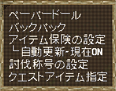
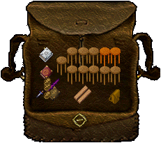
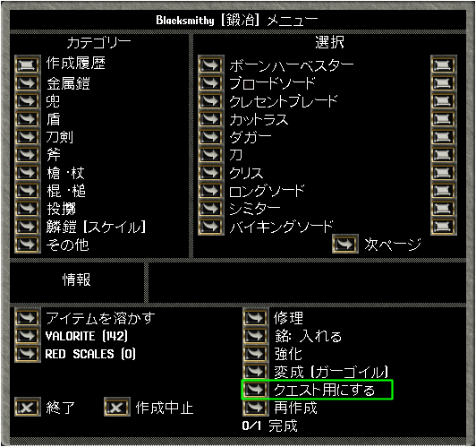

レシピについて
１．概要
宝珠の守人以降、生産スキルで作成できるアイテムの中には、アイテムに関する知識（レシピ）を必要とするものがあります。
それらの多くは、エルフの住処で生産関連クエストを行い、その報酬として入手することができます。
レシピの種類は多く、入手しにくいものも存在しますが、キャラクター毎に得た知識は失われることはありません。
２．レシピの入手方法
レシピを入手する方法は、現在2通りあります。
（１）クエストによる取得
NPCの中にはクエストを出すものもいて、それを完了したときの報酬としてレシピスクロールを入手できる場合があります。
Heartwoodでのクエストを例として、レシピ取得までの流れを示します。
まず、クエストを出すNPCは、カーソルをあてると下の画像のようにQuest Giver（クエスト）の表示があります。
そのようなNPCをダブルクリックすると、クエストが提示されるので、内容を確かめて「Accept：受ける」か「Cancel：受けない」を選択します。
一度受けたクエストをキャンセルしたい場合、
ペーパードールの「Quest」→キャンセルしたいクエストを選択→クエスト詳細の左下にある「Resign：放棄する」を選択
→確認画面で最終確認し、そのクエストはキャンセルされます。
クエスト完了に必要なアイテムを集め、それらをクエストアイテムとして認識させます。
認識させる方法は下記のとおりです。
- 自キャラをクリックして"クエストアイテム指定"を選択する
- 認識させるアイテムを指定する。クエストアイテムとして認識されたものは、オレンジ色の表示となる。
クエストアイテムとなったアイテムをもう一度指定するとクエストアイテムの認識が解除される。
※クエストアイテムの指定は自分のバックパックに直接入ったもののみ有効です。
バックパック内の鞄などに入れたアイテムは指定できません。
また、アイテムを作成するとき、作成メニュー下側にクエストアイテムとして登録するかどうか設定するボタンがあります。
クエストアイテムを必要なだけ用意し、クエストを出したNPCをダブルクリックすると、報酬を受けることができ、報酬を受けてクエスト完了となります。
クエストアイテムを必要量以上指定した場合でも、必要量だけクエストアイテムとして消費されます。


（２）トレジャーハントによる取得
トレジャーハントの掘り出した宝箱の中にレシピスクロールが入っている場合があります。
stone anvil（east）はクエストでは入手できませんが、トレジャーハントの宝箱には入っている場合があります。
３．レシピの習得
入手したレシピスクロールをダブルクリックすると、作成のための知識を得ることができます。
ただし、スキルがレシピアイテムの作成必要スキルに達していない場合、知識を得ることはできません。
知識を得た後でスキルを下げても、一度得た知識は失われることはなく、スキルを上げなおせば再び作成できるようになります。